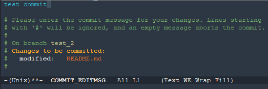
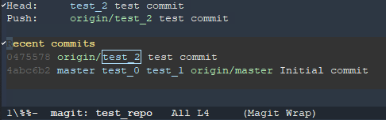

Getting Started with Magit
To Do
[ X ] Headings
[ X ] Write steps
[ ] Test procedure myself
[ ] Add pictures
[ ] Format Code
[ ] Link to magit docs
Why Magit?
Improve your productivity. Improve your understanding of git. Improve your understanding of Emacs. Magit is a useful tool because it offers a better interface than git at the command line, allowing more information to be available at a given time, an interactive "status" page than what you get at the command line for instance. It doesn't have the downsides of full GUI git clients like Github desktop though, difficulty seeing the relationship between local and remote for instance. While the Magit documentation has all of the info necessary to get it going, it doesn't make it easy. In my opinion it's written for someone (and probably by someone) already very familiar with git. So it focuses on how it abstracts away from git rather than how to get things done with git using magit.
This post will therefore walk through exactly the steps necessary to make emacs your go to git interface using Magit.
A disclaimer
The only git interfaces I have used are the terminal, RStudio's git gui, which is maybe the best gui, and Github Desktop which I think is terrible. There may be better options than Magit but so far I'm very happy with magit. Like me, use it for a while and then try something else.
A basic workflow with git
start magit
clone a repo
create a new branch
make a change
save the change
run git on the repo
stage the change
commit the change
configure the new branch
push the change to remote
propagate the change across branches
This obviously ignores the most important thing about git, the ability to actual control differences between versions. Still, I think this tutorial is useful because it is the absolute minimum set of commands you need to be able to use git within emacs using magit. A user that can follow this basic workflow is much better positioned to learn the more intricate operations from the manual pages.
To install and set up magit
M-x list_packages should produce a buffer listing all of the packages available through melpa.
C-s will allow you so search for a string in that buffer. after C-s type magit and use C-s to move through the results sequentially until you find the entry for magit. Click on magit and in the buffer that opens specific to the magit package click install.
You will then want to add (global-set-key (kbd "C-x g") 'magit-status) and (global-set-key (kbd "C-x M-g") 'magit-dispatch) to your emacs init file. Once those are added, save with C-x s and refresh by evaulating that buffer again using M-x eval-buffer (there is a shorter version of this M-x ev-b but in my opinion saving a few key strokes isn't worth using an abbreviation that isn't very intuitive.)
To create and clone a repo
Now you have magit installed and ready to use. Navigate to a directory of your choice, something like ~/code/ which is where I keep a lot of my programming repositories. On Windows this could be C\Users\Hugh\Documents\Code for example. You can do that by typing C-x D and editing the path shown in the emacs status buffer before hitting RET.
Go to Github, make an account if necessary, and create a repo, which I'll call test_repo. When creating the repo, use the option to create it with a README.md file. This is for two reasons, git doesn't like empty directories, and any good repo should have a readme.md document explaining what the repo is for so just make it a habit to include one. Don't create a .gitignore file. Once the repo is created, copy the path by clicking the (probably green) button that says clone or download and copy the SSH or HTTPS link for cloning the repo, use the HTTPS link unless you know you have an SSH connection to github set up already.
Then type C-x M-g to run magit-dispatch using the keybinding we set up earlier. This will present you with a list of options for what Magit calls "suffixes". Enter suffix C, for Clone, type u to clone from a url and paste in the link from github, probably using C-y. You will then be asked whether you want to Set `remote.pushDefault` to "origin"? (y or n). Enter n and hit RET to clone the repo.
To create a new branch
Now that the repo is cloned we can access magit using the more standard approach, running magit-status from a file or directory within the repo using the C-x g keybinding we set up earlier. Once you're in the magit buffer, type b, the branch prefix, and you'll see a list of options for working with branches. Type c to create a new branch. First, you're asked what state the new branch should start from. In this case start from master but it's possible you might want to start from dev or another like issue_1. So type mast, use tab to autocomplete, hit RET and when asked, name the new branch test_0.

Now in the magit buffer, you'll see that head is at the test_0 branch at the last commit to the master branch that we created the test branch from, probably, Initial Commit. You'll also notice that the value of Push doesn't exist. Repeat this procedure so that you have four branches, master, test_0, test_1 and test_2 and head is on test_2.
Finally, in the magit status buffer, press y to see a lit of all the branches that exist in the local repo and in the remote repo. y is the Magit equivalent of git branch -a to list all branches. The @ symbol notes the current branch.
Make and commit a change
Now open README.md in the repo using C-x C-f and navigating to the file's path from wherever emacs starts you. Make some change to the file, for instance adding the text change 1 below the repo name.
Now return to magit, check the repo status and save the file you just edited with a single command, C_x g. You'll be asked to save the file, type y, and after a pause, shown the magit buffer with a single unstaged file, README.md.
Bring your cursor to the line of the unstaged file and press s to stage it. After a pause, put the cursor on the file again, now under staged files and type u which is how you can unstage a file. Stage that file again with s, and then begin the commit process by typing c with the cursor on the staged file. You'll a familiar list of suffix options and complete the commit command by typing another c. Magit then runs the git diff function on the files staged and presents you with two buffers. One will show the output of diff for the file with your new line in green. The other will offer you the chance to add a commit message. Add a brief message and finish the commit using C-c C-c. (The C-c C-c command is a common way to complete a message like this across emacs modes, Org-mode uses it too for instance.)

Push the commit to remote
The next step is to push the new commit. Begin this by typing the prefix P which pulls up the menu of suffix options. The two important options to be aware of are thep push to remote option and the u upstream option. This distinction is often missed using git from a terminal emulator but it's very useful to learn, particularly if you are contributing to a large project that will change while you work on an issue.
The remote is meant to be the remote copy of your new local branch. Upstream is meant to be the branch that your current local branch evolves from and is eventually merged back into probably through a pull request. Chances are that whatever branch you used as the beginning of the current branch when you created it is the branch you want as upstream remote.
 type p to push remote, setting that. Magit will ask for input and type or and hit tab. It should autocomplete to "origin". Hit RET and magit will push, creating a new branch on the remote, named after the local branch that you're pushing from. To confirm this, open github in a web browser and look at the branches in your repo. There should be a new branch called test_2.
Propagate the change across branches
Open a pull request in github to merge test_1 into master and use your write privileges to confirm the merge. This leaves us with a change to remote that we don't have locally. Return to emacs.
Now imagine that we want to work on the issuse that the test_0 and test_1 branches were intended for. The current state is that there is a new commit included in the local test_2 branch, and the remote master and test_1 branches, but not in either the local or remote test_0 branches. This is where the upstream is useful.

Checkout branch test_0. Enter F, type u, in order to fetch changes from the upstream setting that to master when prompted.
This will not update test_0 though because the local master branch does not yet have the commit from test_2.
Checkout test_1 and pull from the upstream, setting that to origin/master using F u. Now use key y to view all of the branches. You should see that master and test_0 are on the initial commit while test_1 and test_2 are on the test commit you made.
Pull the commit into the local master and then pull the commit from local master into test_0 so that all branches are now at the same commit.
Wrapping Up
You now know how to clone a repo, create a new branch, make changes, stage commit and push the changes and update other branches with a pull request that was merged into the master branch of the remote repo. There is plenty git functionality to learn but I think that this workflow covers the core of what you need to know and if you can get through these functions, you are in a good place to begin exploring git and solving problems that arise as you work with multiple versions of a single project.
Thanks very much for reading and I hope your understanding of git, emacs, and magit have improved!